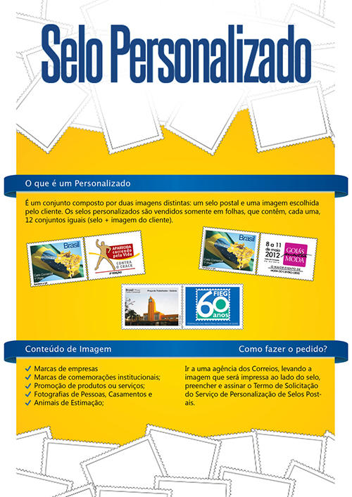

Nos Correios minha função era principalmente a criação de selos personalizados além da elaboração de cartazes, banners e newsletters para a comunicação interna e também nas Agências de Correios da Cidade.
Durante este período passei a entender melhor a importância do trabalho de identidade visual, trabalhando diariamente com a marca dos correios e também na produção de selos personalizados que envolvia principalmente o trabalho com as logos dos contratantes.
